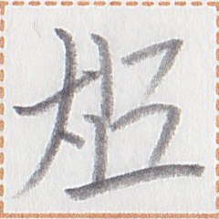
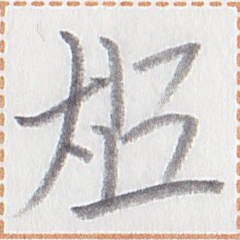

← Previous
Index
Next →
English: Mr. Ark knows how to speak many languages.
Chinese: 书先生会讲很多种语言。
Chinese (pinyin): Shū xiānsheng huì jiǎng hěn duō zhǒng yǔyán.
Pekzep (latin transcription): ak1 xizi py zep1 taun1 nim2 a zep1.
Pekzep (hanzi transcription): 書xizi力言多族之言。
Pekzep (linzklā): 


 


Analysis:
| ak1 | 書 | | name | | Ark (name) |
| xizi | xizi | | name suffix | | Mr. ..., Ms. ... |
| py | 力 | | verb-modifier | modality marker | can |
| zep1 | 言 | | verb | | to say |
| taun1 | 多 | | noun-modifier | | a lot of |
| nim2 | 族 | | noun | | ethnic group |
| a | 之 | | noun-conjunction | | ~'s ~ |
| zep1 | 言 | | noun | requires a modifier | language |